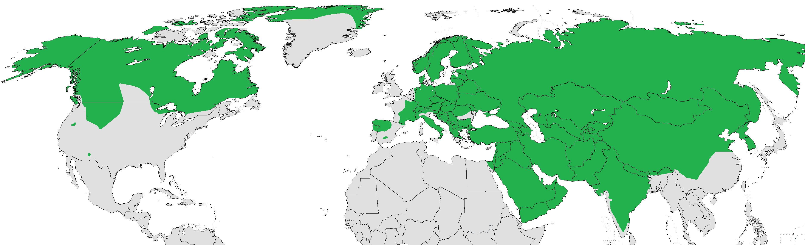

Habitat
Geographical Distribution

By Mariomassone (talk) 23:28, 5 December 2019 (UTC) - Boitani, L., Phillips, M. & Jhala, Y. 2023. Canis lupus (amended version of 2018 assessment). The IUCN Red List of Threatened Species 2023: e.T3746A247624660. https://dx.doi.org/10.2305/IUCN.UK.2023-1.RLTS.T3746A247624660.en. Accessed on 02 June 2024., CC0, https://commons.wikimedia.org/w/index.php?curid=84645790
As the most widespread wolf species, gray wolves are distributed in North America, Europe, and Asia. In North America, they live in Canada, Alaska, and the northern United States. In Europe, they are found in remote areas of Eastern Europe and Scandinavia. In Asia, the majority of them reside in Russia. Nevertheless, gray wolves are only distributed in the Northern Hemisphere.
Living Environments
Gray wolves demonstrate remarkable adaptability. They inhabit a wide range of environments, including temperate forests, mountains, tundra, taiga, grasslands, and even deserts.
Territory
Gray wolves are territorial creatures. To ensure a steady supply of prey, they typically establish territories that exceed their survival needs. The size of these territories is largely influenced by prey availability and the age of the cubs. Wolf packs travel constantly in search of prey, but they tend to avoid hunting on the territory edges to prevent dangerous encounters with neighboring packs.